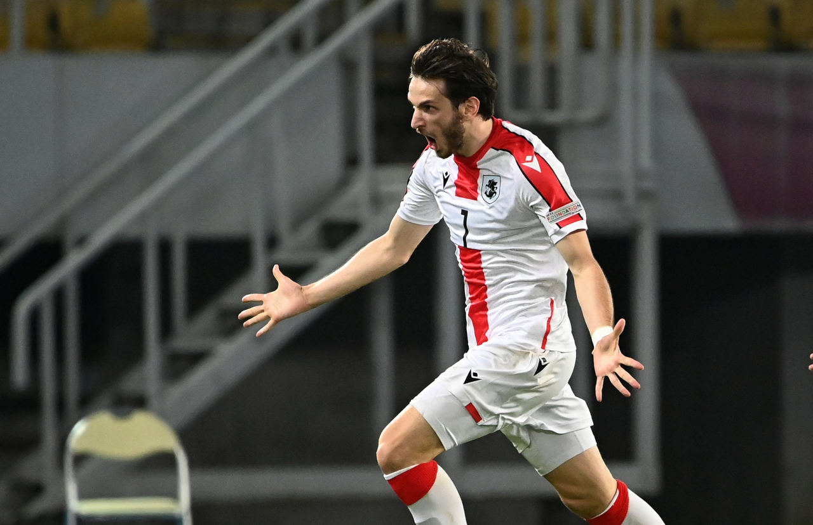
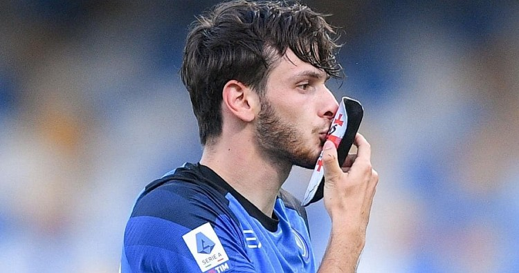

საქართველოს ნაკრები
ხვიჩა არის საქართველოს ეროვნული ნაკრებისა და „ნაპოლის“ შემტევი ნახევარმცველი.
მისი დებიუტი საქართველოს ეროვნულ ნაკრებში შედგა 2019 წლის 7 ივნისს ევროპის ჩემპიონატის შესარჩევი ეტაპის ფარგლებში, გიბრალტარის ეროვნული ნაკრების წინააღმდეგ. კვარაცხელიამ შეხვედრა ძირითად შემადგენლობაში დაიწყო.
2020 წლის 14 ოქტომბერს, მან გაიტანა თავისი პირველი გოლი ნაკრების მაისურით, ერთა ლიგაზე, ჩრდილოეთ მაკედონიის ეროვნული ნაკრების წინააღმდეგ. შეხვედრა ფრედ, ანგარიშით 1–1 დასრულდა.
2021 წელს კვარაცხელიამ ნაკრებში სამი შეხვედრა ჩაატარა და ორი გოლის გატანა მოახერხა. 2021 წლის 28 მარტს მან ესპანეთის ეროვნულ საფეხბურთო ნაკრებს გაუტანა, ხოლო სამ დღეში 31 მარტს საბერძნეთის ნაკრებთან გოლის გატანაც მოახერხა.

"ყაზანის რუბინი"
ყველაზე დიდი დრო ხვიჩამ დაყო ყაზანის რუბინში , კერძოდ 3 წელი
2019 წლის 6 ივლისს, კვარაცხელიამ ხელი მოაწერა ხუთწლიან კონტრაქტს ყაზანის „რუბინთან“.[6] 2019 წლის 15 ივლისს, მან გაუტანა ყოფილ კლუბს, მოსკოვის „ლოკომოტივს“. კვარაცხელიამ მეორე გოლი „რუბინის“ მაისურით, 2019 წლის 30 ნოემბერს, გროზნოს „ახმატის“ წინააღმდეგ გაიტანა. 2020 წლის ზაფხულში გავრცელდა ინფორმაცია, რომ „გალათასარაი“ მზად იყო მის სანაცვლოდ 15 მილიონი ევრო გადაეხადა, მაგრამ ტრანსფერი არ შედგა. 2020 წელს კვარაცხელია ზედიზედ სამჯერ, გულშემატკივრებმა აგვისტოში, სექტემბერსა და ოქტომბერში გუნდის საუკეთესო ფეხბურთელად დაასახელეს. [7] 2020 წელს დასახელდა საქართველოს წლის საუკეთესო ფეხბურთელად. 2020 წლის აპრილში კვლავ დაასახელეს გუნდის თვის საუკეთესო ფეხბურთელად.

"ნაპოლი"
ხვიჩა კვარაცხელია 2022 წლის ზაფხულში იტალიური ,,ნაპოლის" ფეხბურთელი გახდა . მან სულ რაღაც 2 თვეში თავი მთელს ნეაპოლს შეაყვარა და აგვისტოს საუკეთსო ეფხბურთელის ჯილდოც დაიმსახურა თავისი 4 გოლით და 2 საგოლე გადაემით